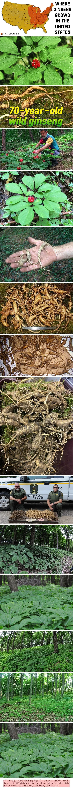
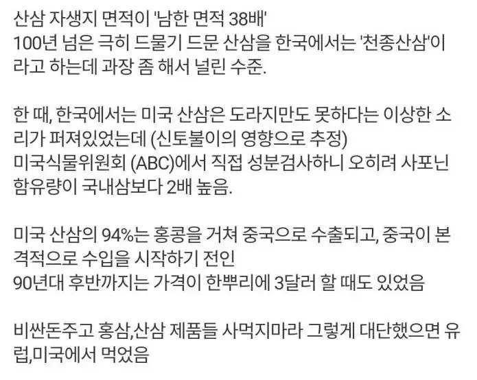
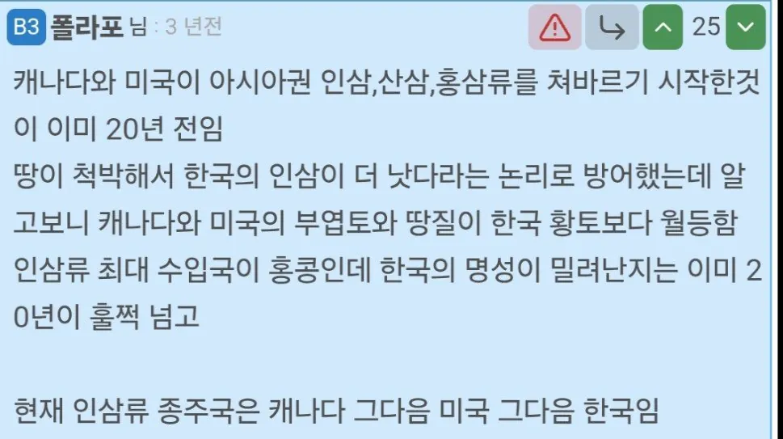
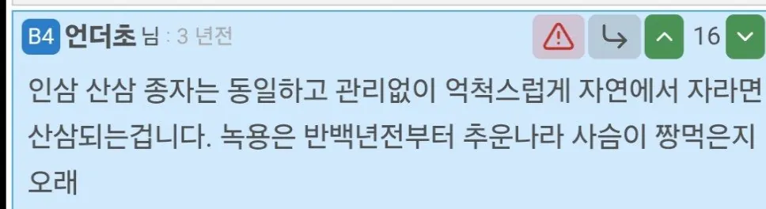
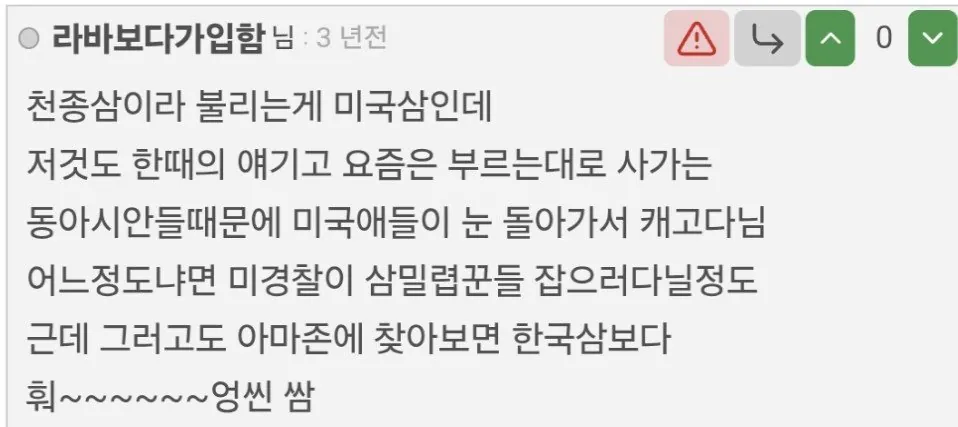

진짜 뭘해도 국토가 사기맵이야..





진짜 뭘해도 국토가 사기맵이야..
재내는 산에서 사람 먹는 애들이 제법 있어서 그냥 맨몸 체집이 안됨.. 레인저 부대 동원해서 하더라
식인종 있다는 줄 알았네 ㅋㅋ
그..야생동물 말하는거 맞지..?
머프리 패거리 말하는거 아니지...?
미국인삼과 한국인삼은 품종도 다르고 함유성분도 다름
사포닌은 그냥 수많은 성분을 거품이 나는 성분이라고 뭉뚱그려서 부르는거고
실제 그걸 구성하는 세부 물질들의 구성이 다름
오 자세히 설명 가능하신가요?? 겨울되면 삼 먹으면 몸이뜨끈해져서 잘 맞아서 먹는중인데 너무 비쌈..
미국인삼과 한국인삼은 이름만 다른 같은 식물이 아니야. 식물학적으로 서로 다른 종이고, 함유된 성분에도 차이가 있어.
한국인삼은 고려인삼(Panax ginseng), 미국인삼은 화기삼(Panax quinquefolius)이라고 불러.
여기서 중요한 게 사포닌이야. 사포닌은 하나의 성분이 아니라 여러 화합물을 통칭하는 말이야. 인삼에 들어 있는 사포닌을 특별히 진세노사이드라고 불러.
진세노사이드도 Rg1, Rb1, Rg3, Re 등 여러 종류가 있어. 이 성분들은 종류에 따라 신경계, 혈당 대사, 염증 반응 등에 미치는 생리작용이 달라.
한국인삼은 일반적으로 Rg1, Rb2 등의 성분이 특징적이고, 미국인삼은 Rb1, Re 등의 성분 비율이 상대적으로 높은 편이야. 미국인삼에는 P-F11이라는 특징적인 성분도 있어.
전통의학에서는 한국인삼을 따뜻한 성질, 미국인삼을 서늘한 성질로 구분해. 다만 실제 체온을 올리거나 내린다는 의미는 아니야.
결론적으로 두 인삼은 사포닌 총량만 다른 게 아니라 사포닌을 구성하는 세부 성분과 비율 자체가 달라. 그래서 생리작용에도 차이가 있을 수 있는 거야.
즉, 사포닌이 많다고 무조건 좋은 인삼은 아니야. 어떤 종류의 사포닌이 얼마나 들어 있는지가 더 중요할 수 있어.
그래서 의학적으로 효능이 더 좋은게 뭔데 하면말 돌리기시작됨 ㅋㅋ
사포닌=단백질일 때
단백질이라고 다 같은 단백질이 아니라 아미노산 구성 및 함량을 확인하라는 것과 비슷한 얘기 같네 그렇다면 단백질 중에서 EAA, BCAA의 영향력이 크듯이 사포닌에서도 그런 성분이 있을까??
이거 챗지피티 무료판 긁어온거잖아 내가 검색하니까 토시하나 안틀리고 똑같이 말하는데
인삼에 함유되어있는 ginsenoside의 종류가 굉장히 많은데 미국인삼은 Rb1에 치중되어있는 반면 한국인삼은 Ro Rg1 Rc 등등 다양하게 고루 분포되어있음
그리고 Rf Ra1은 미국인삼에 없이 한국인삼에만 있고 반대로 F2는 미국삼에만 있음
(배봉석 외, 국내 재배 6년근 고려인삼과 미국삼의 가공방법에 따른 성분 비교, 한국약용작물학회지 2021vol29, no1, pp.35-44)
그래서 성분의 차이가 효과의 차이를 내는데 미국인삼은 진정과 항암작용에 상대적으로 좋다하고 그 자양강장 효과는 한국인삼이 좋다고 카는데 이건 뭐 몰?루
저거 관련 재미있는 다큐가
히스토리채널서 해줬던 어팔래치안 아웃로 라는 다큐가 있는데
살벌함 ㅋㅋㅋㅋ
녹용은 효과 없다
애초에 산삼,인삼이 건강에 큰 효과가 없다던데
가끔 선물용으로 살거없어서 사려다가 내 가치관이랑 충돌해서 사기싫음
쟤네는 몇만년동안 묵혀뒀다가 이제 캐기시작한거고
우리는 몇천년동안 캐다가 이제 고갈되었는데 비교자체가 안되긴하지
걍 면적이 다름…
땅 영양이 다른데..
땍! 신토불이 모르냐? 한국삼이 한국인에게 좋은것이여
홍삼 가끔 선물용으로 받는데 컨디션 좋아지던데 플라시보인진 몰라도
벼도 심기만하면 알아서 잘자라 약초도 많아 자원도 많아
황금의 땅이네
저기는 진짜 천년삼 잇으려나
근데 최근에 캐기 시작했다는건 잘못됐다는게 미국 독립전쟁 후 씹창난 무역수지를 정상화시켰던게 미국 인삼 수출이었음
근데 하도 많이 캐다 파니까 질 안 좋은 것도 다 갖다 팔고 그러다보니 미국삼 별로라는 인식 생기고 안 팔리기 시작하니까 내수로 돌리려고 인삼차 레시피 같은 것도 미국 국내에서 홍보하고 그랬음
산삼은 오랫동안 잘근잘근 씹어먹는다던데
저런 산삼 씹어먹을라면 1박 2일동안 먹겠노
2년전에 이거 보고 아마존 찾아봤는데 이미 비싸던데ㅜ
진세노사이드, 사포닌 ㅋㅋㅋ속지마라
인삼직구가 되나??
뭐 성분이 좋든 말든 건기식이라 미국꺼 수입해서 먹어도 드라마틱한 차이는 없음
레데리 할 때 많이 캐먹었지
내가 짱.깨 살면서 홍콩애들이랑도 많이 접촉 해봤는데 아직도 인삼은 한국 인삼을 최고로 취급함, 성분 같은건 잘 모르겠는데 홍콩 애들 말로는 한국 인삼이 약효가 제일 쎄고 강해서 중의학을 잘하고 경험많은 의사들만 신중하게 처방한다더라. 북미삼도 많이 쓰는데 걔들 얘기로는 북미삼은 대충 눈대중으로 달여먹어도 문제 없을 정도로 안전해서 대중적인 이미지가 강하고 한국삼은 진짜 귀한 약재 취급을 받는 명물이라고 함, 그래서 별탈 없는 홍삼이 인기가 많은데 홍삼편 같은거 선물해주면 아주 좋아함,
고마워! 참고할게
자고로 고서에도 동이의 땅에서는 인삼이 많이 난다고 했으니 인삼이 많은 곳이 곧 조선의 땅이다!
어릴 때 우연히 종이신문에 성인극화체 만화를 봤었는데 (어릴때봐서 기억이 다를 수 있음)부모가 아픈 아기한테 어쩔줄 몰라서 그날 캐온 비싼 산삼을 돈을 포기하고 먹임. 갑자기 애기 꼬추가 막 빨갛게 빛나면서 애기가 응애 응애 움. 그게 인삼이랑 산삼보면 아직도 그짤이 생각남
방장사기
제에발 한국 사람이면…!
방장사기맵이 조스로 보이나